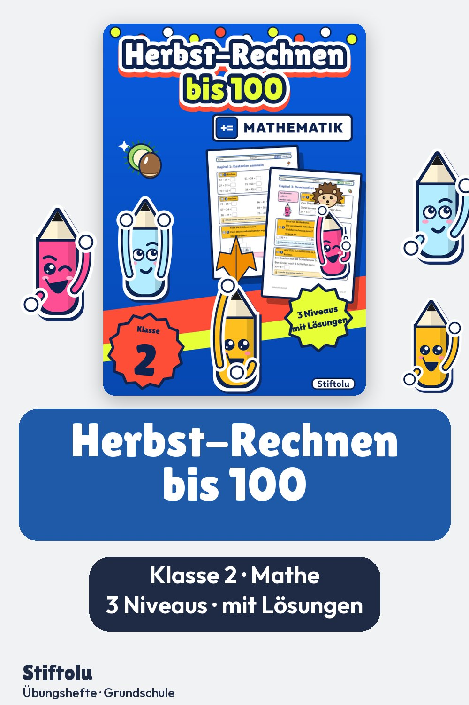

Werbung · Übungsheft von Stiftolu
Herbst und Rechnen bis 100 in Klasse 2: Kastanien, Äpfel und ein Drachenfest

Kastanien sammeln, im Apfelgarten pflücken, beim Drachenfest mitrechnen: Die Rechengeschichten stammen alle aus dem Herbst. Dazu kommen Zahlenmauern und der Zahlenstrahl, jeweils mit und ohne Zehnerübergang. Auf 70 Seiten stehen drei Niveaus, Lösungen und eine Handreichung bereit; erhältlich auf eduki im Shop Stiftolu.